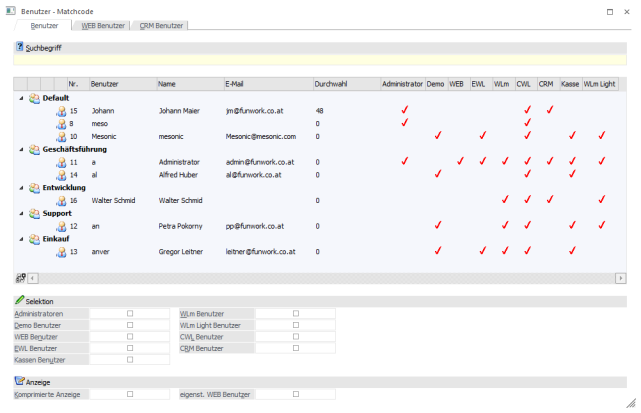
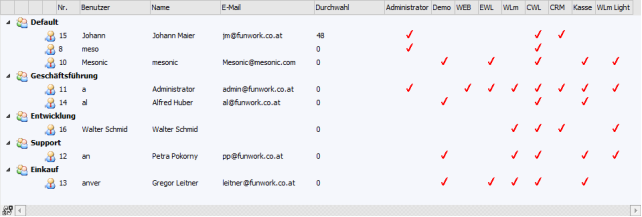
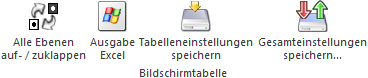
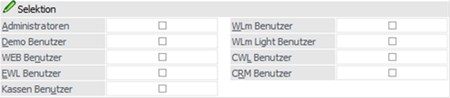
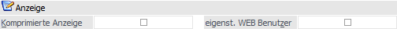

In dem Register "Benutzer" werden alle WinLine Benutzer angezeigt, welche für den aktuellen Mandanten eine Berechtigung aufweisen.
Hinweis
Im WinLine ADMIN werden immer alle Benutzer angezeigt. Dieses gilt auch für die folgenden Programme der WinLine START:
ü Monitor
ü Auditprotokoll Funktionen
ü Auditprotokoll Daten
ü CRM Daten Cockpit (Button "Favoriten verteilen")

Ø Suchbegriff
Durch Eingabe und Bestätigen eines Suchbegriffs wird in der Benutzernummer, dem Login und dem Benutzernamen gesucht und die Suchergebnistabelle entsprechend aufgebaut.
Tabelle "Suchergebnis"

In der Tabelle werden alle gefundenen Benutzer angezeigt, wobei jeder Benutzer unter seiner jeweiligen Benutzergruppen aufgelistet wird. Mit Hilfe der Taste Enter oder per Doppelklick kann ein Benutzer in das Ausgangsfeld übernommen werden.
Hinweis
Die Spalten "Administrator" bis "Kasse" werden nur WinLine Benutzern des Typs "Administrator" oder mit der Administratorenberechtigung "Datenadministration" angezeigt.
Tabellenbuttons

Ø Alle Ebenen auf- / zuklappen
Durch Anwahl des Buttons "Alle Ebenen auf- / zuklappen" werden die Benutzergruppen temporär zugeklappt.
Ø Ausgabe Excel
Durch Anwahl des Buttons "Ausgabe Excel" wird der Inhalt der Tabelle nach Microsoft Excel übergeben.
Ø Tabelleneinstellungen speichern
Die Spalten einer Tabelle können grundsätzlich an beliebige Positionen verschoben, bzw. in der Breite entsprechend angepasst werden. Durch Anwahl des Buttons "Tabelleneinstellungen speichern" werden die Einstellungen benutzerspezifisch gespeichert und bei dem nächsten Aufruf des Programmpunktes wieder vorgeschlagen.
Ø Gesamteinstellungen speichern
Im Gegensatz zu "Tabelleneinstellungen speichern" können mit "Gesamteinstellungen speichern" mehrere Tabellenaufbauten gespeichert und nach Wunsch geladen werden. Zusätzlich werden Sonderfunktionen der Tabelle (z.B. "Spalte gruppieren") ebenfalls bei der Speicherung bedacht.
Selektion

Unter dem Bereich "Selektion" kann ausgewählt werden, was für Typen von Benutzern angezeigt werden sollen. Diese Selektionen werden benutzerspezifisch gespeichert.
Hinweis
Bei der Aktivierung mehrerer Checkboxen handelt es sich um eine "UND"-Verknüpfung.
Ø Administratoren
Durch Anwahl der Option "Administratoren" werden nur noch WinLine Benutzer angezeigt, bei welchen der Benutzer-Typ "Administrator" aktiviert wurde.
Ø Demo Benutzer
Wird diese Checkbox aktiviert, so werden nur die Benutzer angezeigt, bei denen in der Benutzeranlage unter Typ die Option "Demo Benutzer" aktiviert wurde.
Ø WEB Benutzer
Durch Anwahl der Option "WEB Benutzer" werden nur noch WinLine Benutzer angezeigt, bei welchen der Benutzer-Typ "WEB Benutzer" aktiviert wurde.
Ø EWL Benutzer
Wird diese Checkbox aktiviert, so werden nur die Benutzer angezeigt, bei denen in der Benutzeranlage unter Typ die Option "EWL Benutzer" aktiviert wurde.
Ø Kassen Benutzer
Wird diese Checkbox aktiviert, so werden nur die Benutzer angezeigt, bei denen in der Benutzeranlage unter Typ die Option "Kassen Benutzer" aktiviert wurde.
Ø WLm Benutzer
Durch Anwahl der Option "WLm Benutzer" werden nur noch WinLine Benutzer angezeigt, bei welchen der Benutzer-Typ "WLm Benutzer" aktiviert wurde.
Ø WLm Light Benutzer
Durch Anwahl der Option "WLm Light Benutzer" werden nur noch WinLine Benutzer angezeigt, bei welchen der Benutzer-Typ "WLm Light Benutzer" aktiviert wurde.
Ø CWL Benutzer
Wird diese Checkbox aktiviert, so werden nur die Benutzer angezeigt, bei denen in der Benutzeranlage unter Typ die Option "CWL Benutzer" aktiviert wurde.
Ø CRM Benutzer
Durch Anwahl der Option "CRM Benutzer" werden nur noch WinLine Benutzer angezeigt, bei welchen der Benutzer-Typ "CRM Benutzer" aktiviert wurde.
Anzeige

Die Einstellungen des Bereichs "Anzeige" werden benutzerspezifisch gespeichert.
Ø Komprimierte Anzeige
Durch Aktivierung der Checkbox "Komprimierte Anzeige" werden die Benutzergruppen bei dem Start des Matchcodes zugeklappt dargestellt.
Ø eigenst. WEB Benutzer
Wenn diese Option aktiviert wurde, so werden in der Tabelle des Suchergebnisses neben den WinLine Benutzern auch alle WEB Benutzer dargestellt.